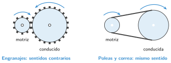
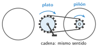
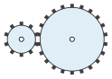

Transmisión de movimiento: engranajes, poleas y correas
🤔 Pienso5 min
Qué hago aquí: Piensa un momento y contesta con lo que ya sabes. No pasa nada si no lo sabes: es para empezar.
En una bicicleta, los pedales están en un eje y la rueda trasera en otro. ¿Qué pieza lleva el giro de uno a otro?
📖 Leo y aprendo15 min
Qué hago aquí: Lee despacio, mira los dibujos y los ejemplos, y quédate con la idea clave del final.
El motor de un robot gira en un eje. La rueda suele estar en otro eje. Un mecanismo de transmisión lleva el giro de un eje a otro.
El eje del motor es el motriz. El que recibe el giro es el conducido.

En la bici , el plato y el piñón son engranajes unidos por una cadena.

✏️ Hago25 min
Qué hago aquí: Haz las actividades en orden. Empieza siempre por las básicas.
Completa la tabla con «mismo» o «contrario».
| Mecanismo | Sentido de giro |
|---|---|
| Dos engranajes | |
| Dos poleas con correa | |
| Plato y piñón de la bici (cadena) |
Dibuja flechas de giro en los dos engranajes. El de la izquierda gira hacia la derecha.

Escribe un aparato que tenga engranajes y otro que tenga correa.
Vuelve a Pienso. ¿Qué mecanismo tiene la bici? ¿Giran el plato y el piñón en el mismo sentido?
Cinco engranajes están en fila. El primero gira hacia la derecha. ¿Hacia dónde gira el último?
✏️ Puedes responder escribiendo, con un dibujo o un esquema, o contándolo en voz alta.
🚀 Amplío (si quieres saber más)
Qué hago aquí: ¿Has terminado? Lee la curiosidad o elige el reto. Es voluntario.
En Tinkercad, diseña dos ruedas de distinto tamaño, una al lado de otra, con un cilindro fino como eje. Dibuja aquí cómo girarían con engranajes y cómo con correa.
✅ Compruebo5 min
Qué hago aquí: Contesta sin mirar la ficha y marca cómo lo llevas.